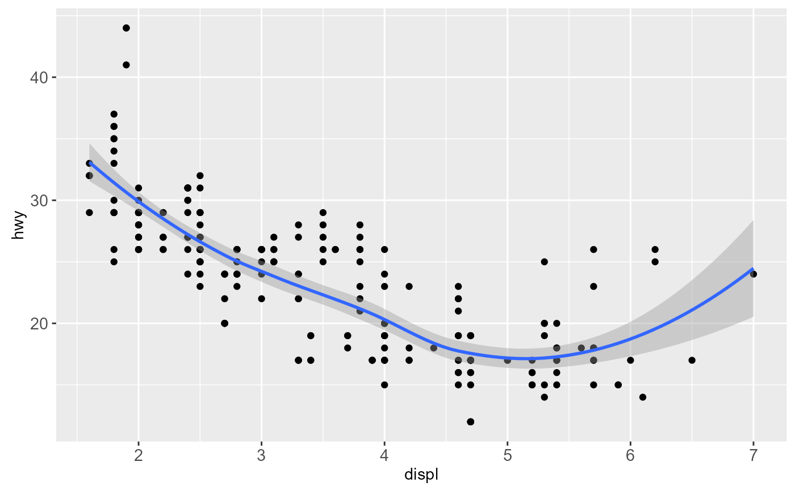
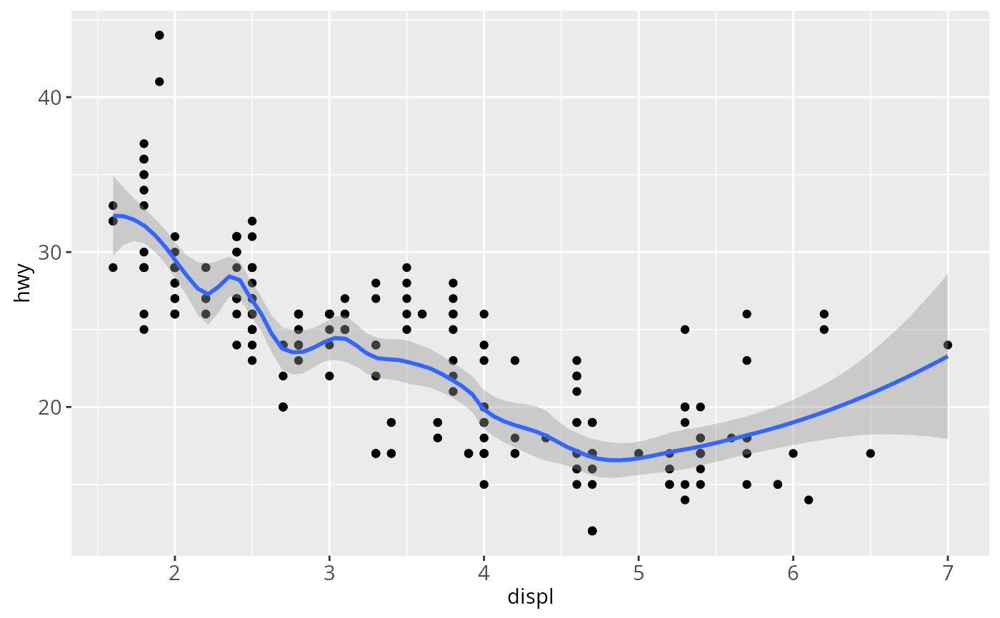
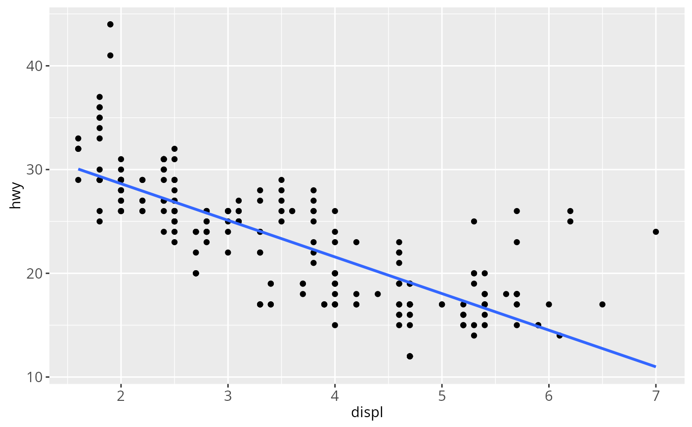
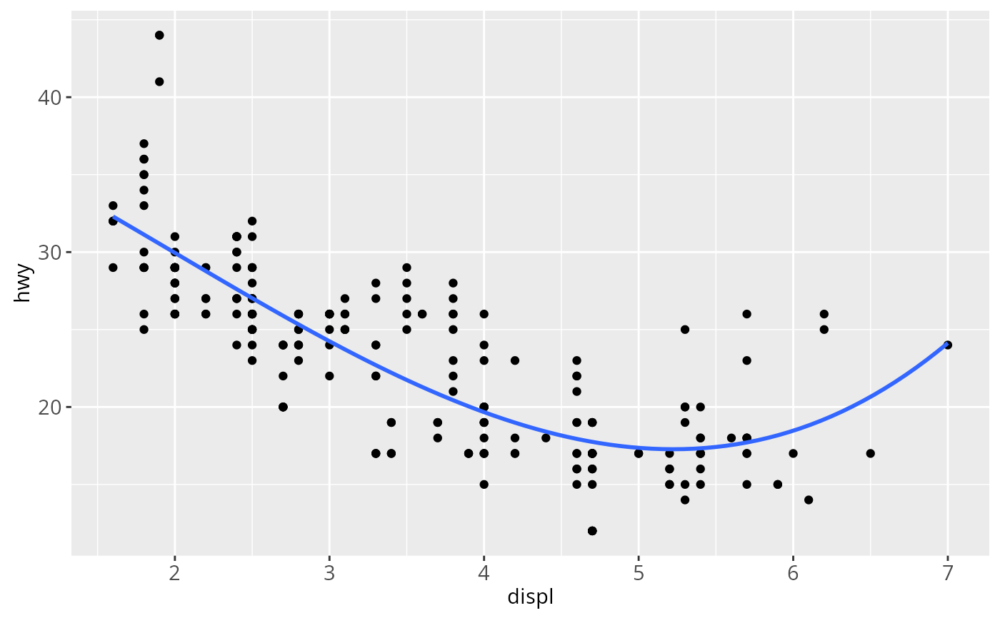
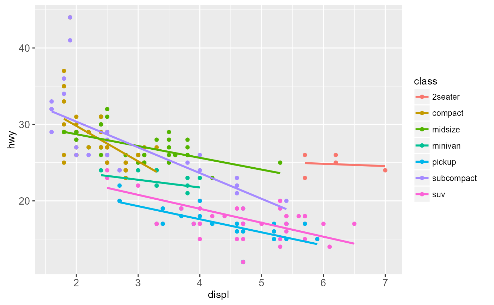
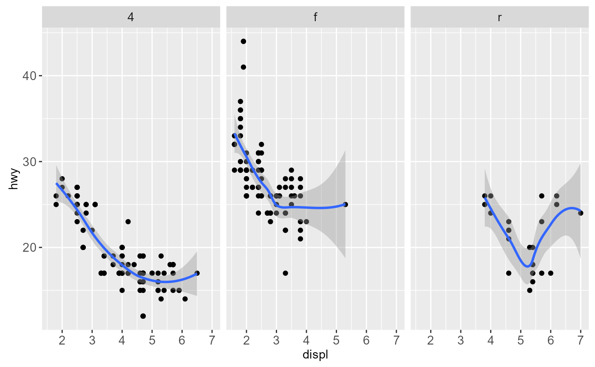
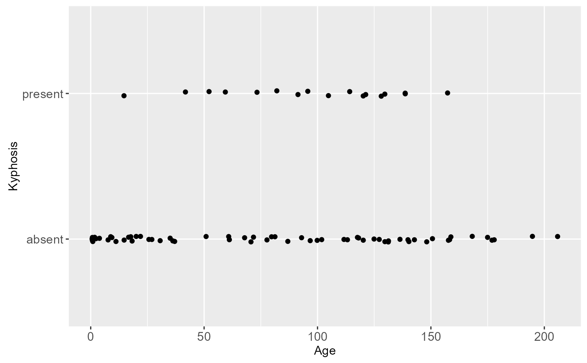
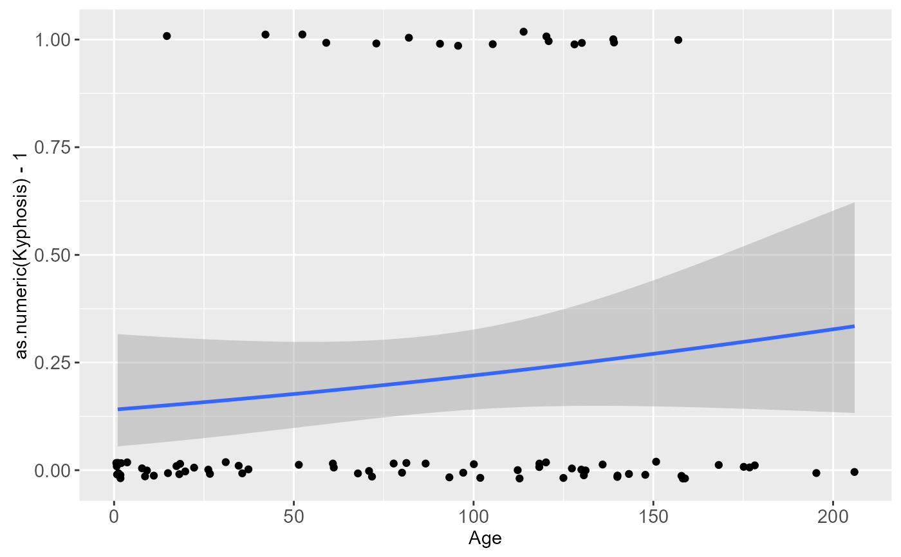
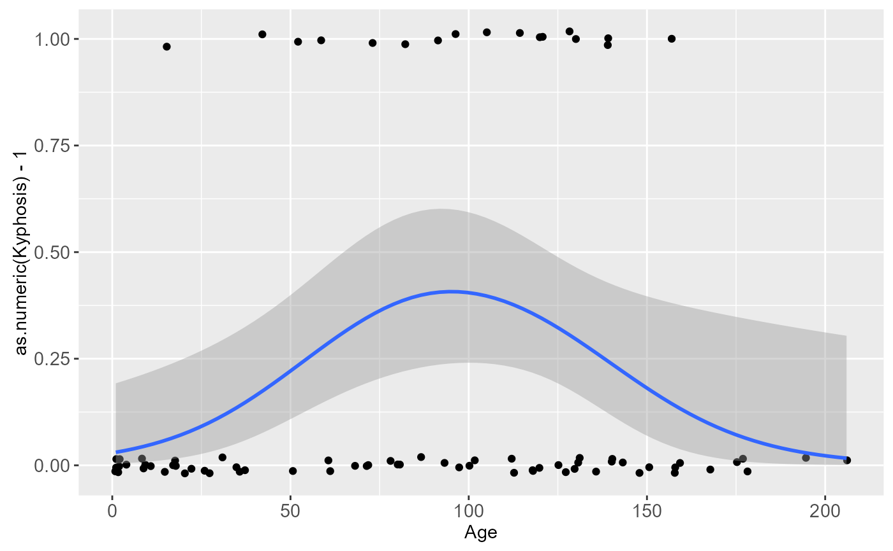

Aids the eye in seeing patterns in the presence of overplotting.
geom_smooth and stat_smooth are effectively aliases: they
both use the same arguments. Use geom_smooth unless you want to
display the results with a non-standard geom.
Usage
geom_smooth(
mapping = NULL,
data = NULL,
stat = "smooth",
position = "identity",
...,
method = "auto",
formula = y ~ x,
se = TRUE,
na.rm = FALSE,
show.legend = NA,
inherit.aes = TRUE
)
stat_smooth(
mapping = NULL,
data = NULL,
geom = "smooth",
position = "identity",
...,
method = "auto",
formula = y ~ x,
se = TRUE,
n = 80,
span = 0.75,
fullrange = FALSE,
level = 0.95,
method.args = list(),
na.rm = FALSE,
show.legend = NA,
inherit.aes = TRUE
)Arguments
- mapping
Set of aesthetic mappings created by
aesoraes_. If specified andinherit.aes = TRUE(the default), it is combined with the default mapping at the top level of the plot. You must supplymappingif there is no plot mapping.- data
The data to be displayed in this layer. There are three options:
If
NULL, the default, the data is inherited from the plot data as specified in the call toggplot.A
data.frame, or other object, will override the plot data. All objects will be fortified to produce a data frame. Seefortifyfor which variables will be created.A
functionwill be called with a single argument, the plot data. The return value must be adata.frame., and will be used as the layer data.- position
Position adjustment, either as a string, or the result of a call to a position adjustment function.
- ...
other arguments passed on to
layer. These are often aesthetics, used to set an aesthetic to a fixed value, likecolor = "red"orsize = 3. They may also be parameters to the paired geom/stat.- method
smoothing method (function) to use, eg. lm, glm, gam, loess, rlm. For datasets with n < 1000 default is
loess. For datasets with 1000 or more observations defaults to gam, seegamfor more details.- formula
formula to use in smoothing function, eg.
y ~ x,y ~ poly(x, 2),y ~ log(x)- se
display confidence interval around smooth? (TRUE by default, see level to control
- na.rm
If
FALSE(the default), removes missing values with a warning. IfTRUEsilently removes missing values.- show.legend
logical. Should this layer be included in the legends?
NA, the default, includes if any aesthetics are mapped.FALSEnever includes, andTRUEalways includes.- inherit.aes
If
FALSE, overrides the default aesthetics, rather than combining with them. This is most useful for helper functions that define both data and aesthetics and shouldn't inherit behaviour from the default plot specification, e.g.borders.- geom, stat
Use to override the default connection between
geom_smoothandstat_smooth.- n
number of points to evaluate smoother at
- span
Controls the amount of smoothing for the default loess smoother. Smaller numbers produce wigglier lines, larger numbers produce smoother lines.
- fullrange
should the fit span the full range of the plot, or just the data
- level
level of confidence interval to use (0.95 by default)
- method.args
List of additional arguments passed on to the modelling function defined by
method.
Details
Calculation is performed by the (currently undocumented)
predictdf generic and its methods. For most methods the standard
error bounds are computed using the predict method - the
exceptions are loess which uses a t-based approximation, and
glm where the normal confidence interval is constructed on the link
scale, and then back-transformed to the response scale.
Aesthetics
geom_smooth understands the following aesthetics (required aesthetics are in bold):
x
y
alpha
colour
fill
linetype
size
weight
Computed variables
- y
predicted value
- ymin
lower pointwise confidence interval around the mean
- ymax
upper pointwise confidence interval around the mean
- se
standard error
Examples
ggplot(mpg, aes(displ, hwy)) +
geom_point() +
geom_smooth()

# Use span to control the "wiggliness" of the default loess smoother
# The span is the fraction of points used to fit each local regression:
# small numbers make a wigglier curve, larger numbers make a smoother curve.
ggplot(mpg, aes(displ, hwy)) +
geom_point() +
geom_smooth(span = 0.3)

# Instead of a loess smooth, you can use any other modelling function:
ggplot(mpg, aes(displ, hwy)) +
geom_point() +
geom_smooth(method = "lm", se = FALSE)

ggplot(mpg, aes(displ, hwy)) +
geom_point() +
geom_smooth(method = "lm", formula = y ~ splines::bs(x, 3), se = FALSE)

# Smoothes are automatically fit to each group (defined by categorical
# aesthetics or the group aesthetic) and for each facet
ggplot(mpg, aes(displ, hwy, colour = class)) +
geom_point() +
geom_smooth(se = FALSE, method = "lm")

ggplot(mpg, aes(displ, hwy)) +
geom_point() +
geom_smooth(span = 0.8) +
facet_wrap(~drv)

# \donttest{
binomial_smooth <- function(...) {
geom_smooth(method = "glm", method.args = list(family = "binomial"), ...)
}
# To fit a logistic regression, you need to coerce the values to
# a numeric vector lying between 0 and 1.
ggplot(rpart::kyphosis, aes(Age, Kyphosis)) +
geom_jitter(height = 0.05) +
binomial_smooth()
#> Warning: Computation failed in `stat_smooth()`:
#> y values must be 0 <= y <= 1

ggplot(rpart::kyphosis, aes(Age, as.numeric(Kyphosis) - 1)) +
geom_jitter(height = 0.05) +
binomial_smooth()

ggplot(rpart::kyphosis, aes(Age, as.numeric(Kyphosis) - 1)) +
geom_jitter(height = 0.05) +
binomial_smooth(formula = y ~ splines::ns(x, 2))

# But in this case, it's probably better to fit the model yourself
# so you can exercise more control and see whether or not it's a good model
# }